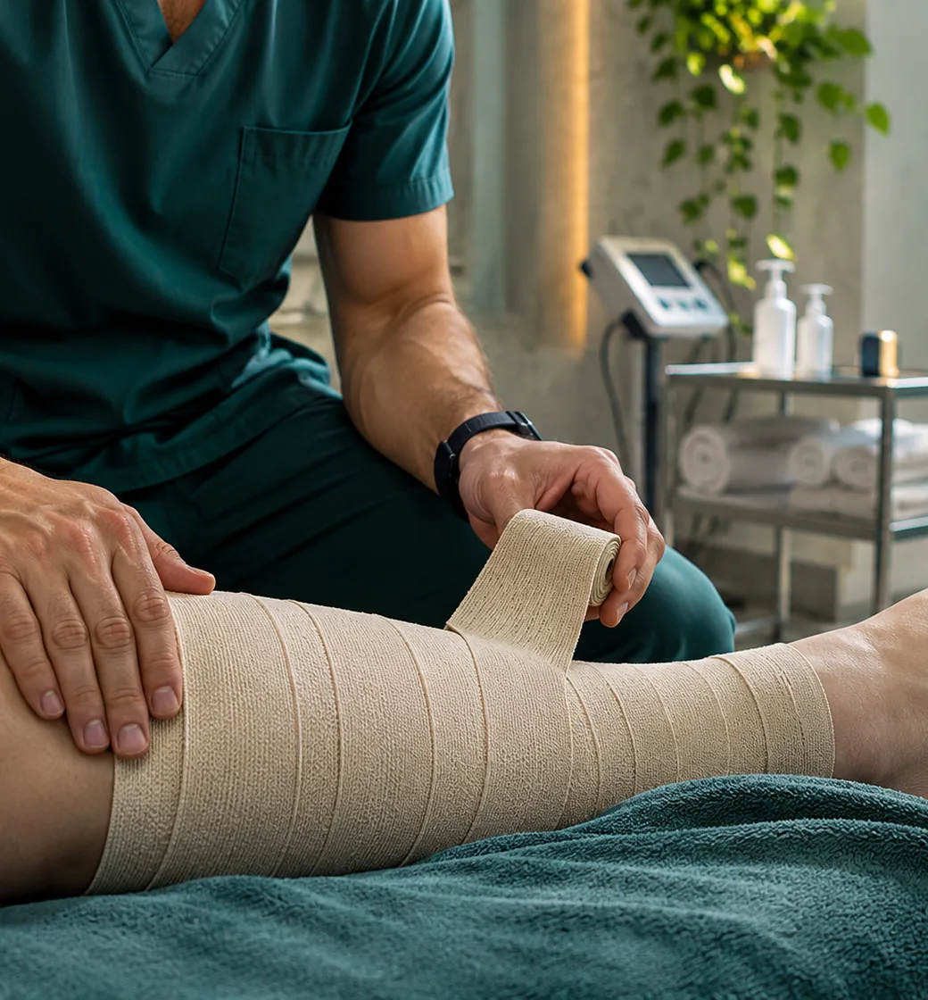
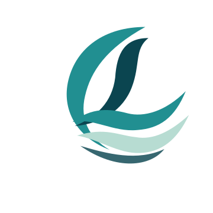
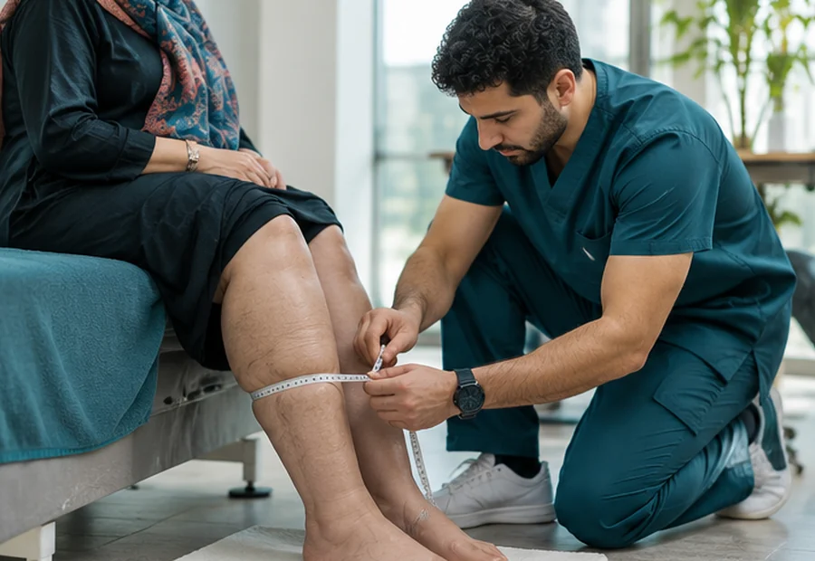
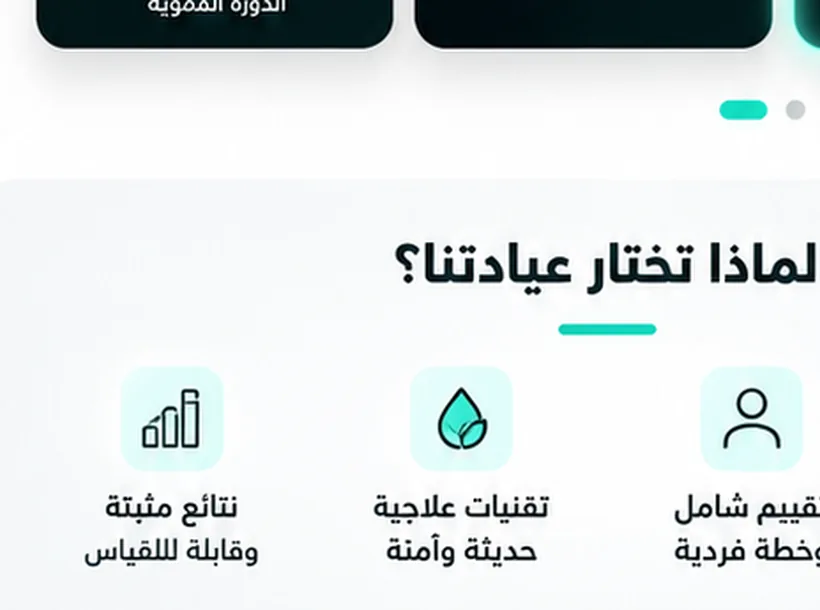

تقييم فردي
نبدأ بفهم التاريخ والحالة والاحتياجات قبل اختيار الخطة.


LYMELVALYMPHEDEMA & PHYSICAL THERAPYبنبدأ بفهم سبب التورم وتأثيره على حركتك. وبعد التقييم بنشرح الخيارات المناسبة لحالتك، من الضغط العلاجي والحركة إلى العناية بالجلد والمتابعة.
الوذمة اللمفية محتاجة رعاية دقيقة ومستمرة، مش حل واحد لكل الناس. بنركّز على تقييم واضح، اختيار التدخل المناسب، وفهم احتياجاتك في حياتك اليومية.
اعرف منهجنا في الرعاية↗نبدأ بفهم التاريخ والحالة والاحتياجات قبل اختيار الخطة.
حركة وضغط وعناية بالجلد وتقنيات يدوية بحسب التقييم.
نساعدك تفهم الإدارة الذاتية والمتابعة المناسبة.
اختيار الخدمة والضغط العلاجي أو التمارين بيكون بعد مراجعة الحالة وموانع العلاج.
مشاهد توضيحية للرعاية
الخدمات المعروضة لا تعني إنها مناسبة لكل حالة؛ التقييم الطبي يحدد الخطة.
اختار أي خطوة علشان تشوف بنفكر في رحلة الرعاية من أول التقييم للمتابعة.

01 — 04رحلة الرعاية تبدأ بفهم الحالة.

مشاهد توضيحية للرعايةهدفنا نسهّل عليك فهم الخيارات المتاحة، وإزاي تتابع مع الفريق المختص، وتعمل عادات آمنة تناسب حالتك وخطة رعايتك.
ابدأ الدليل التفاعلي↗مقالات قصيرة عن علامات التورم وطرق الرعاية اليومية ومتى تحتاج إلى تقييم طبي.
حمّل 3 ملفات أصلية للتوعية والخطوات التحضيرية للزيارة.
30 موضوع توعوي بالعربي والإنجليزي، ومصادر عالمية موثوقة، وعلامات خطر، وبحث سريع. كل معلومة مرتبطة بمراجعها الأصلية.
إجابات مبسطة تساعدك تفهم خطوات الرعاية، والقرار العلاجي دايمًا حسب تقييم مختص.
لسه عندك سؤال؟↗تواصل معانا مباشرة على واتساب 01027594048 أو جهز ملخص استفسارك. المراسلة لا تؤكد حجز موعد.
تواصل معنا مباشرة على واتساب01027594048